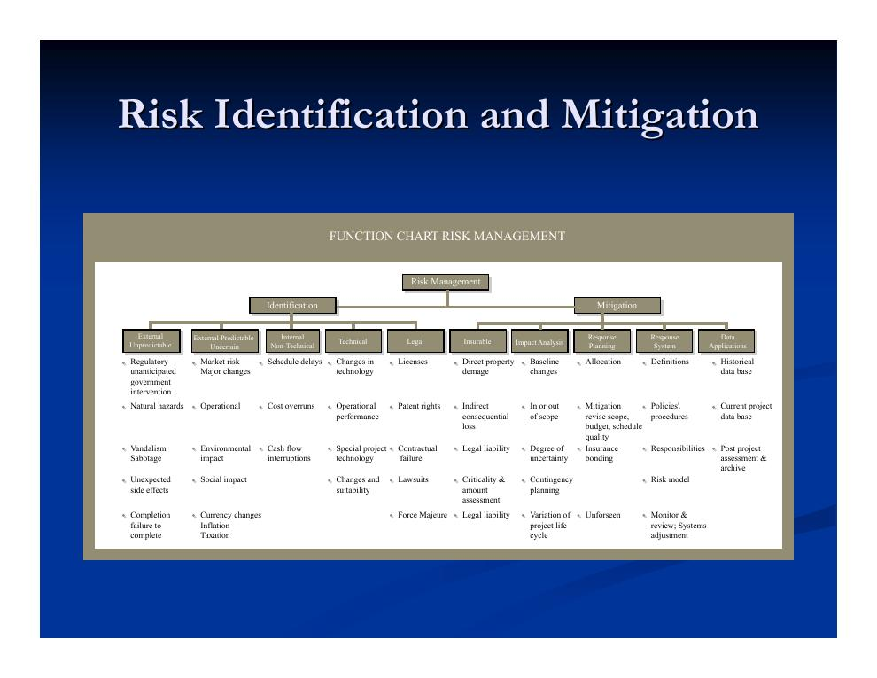
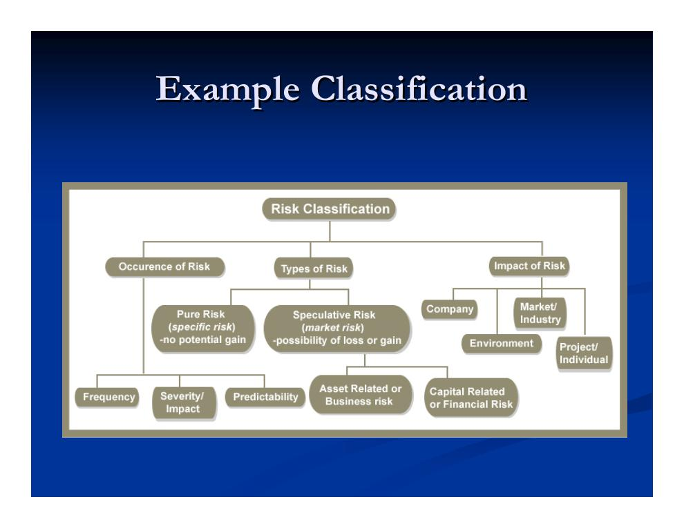
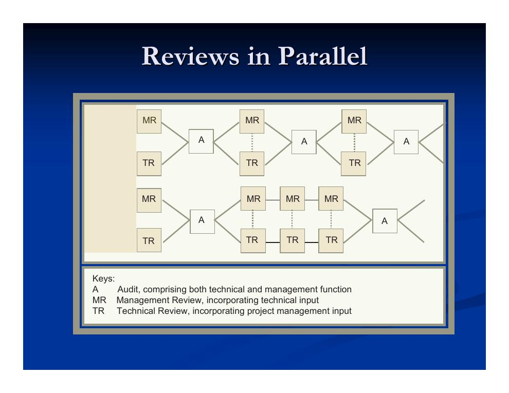

- Qualitätsüberwachung: Begriffe und Ebenen
- Qualität, Bauverfahren und die Grenzen der Qualitätsprognose
- Risiko und Risikoidentifikation
- Risikoklassifikation und Priorisierung
- Vier Strategien der Risikobewältigung
- Statische und adaptive Strategien, Eskalation und Modelle
- Projektlernen und Projektbesprechungen
- Technische Reviews und Management-Reviews
1. Qualitätsüberwachung: Begriffe und Ebenen
Die Steuerung der Qualitätsleistung (Quality Performance Control) umfasst mehrere aufeinander aufbauende Ebenen – von der einzelnen Prüfung bis zur Unternehmensphilosophie. Wichtig ist dabei: Qualität ist eng mit den übrigen Steuerungsgrößen verzahnt. Kosten und Termine hängen von der Qualität ab (Stichwort Nacharbeit), und die Lebenszykluskosten eines Bauwerks werden maßgeblich von der erreichten Qualität bestimmt. Qualität rückt zunehmend in den Fokus; manche Verträge – insbesondere Verträge der US-Bundesbehörden – schreiben dem Auftragnehmer sogar ein eigenes Qualitätssicherungsregime („Contractor Quality Control“) verbindlich vor.
- Qualitätssicherung (Quality Assurance, QA)
- Wird in der Regel von den Ausführenden selbst geleistet, die als benannte „QA-Anleiter“ qualitätsbezogene Probleme erkennen und beheben. Während des Prozesses geben sie den Ausführenden vor allem Orientierung und Führung, statt deren Arbeit zu kritisieren. Der Anteil der Qualitätssicherung durch den Auftragnehmer nimmt zu.
- Qualitätskontrolle (Quality Control, QC)
- Wird meist von bestellten Prüfern des Auftraggebers durchgeführt, häufig am Ende großer Ausführungsphasen. Die Beteiligten werden vom Management bewusst in eine gegnerische Rolle gebracht – obwohl Prüf- und Produktionsabteilung derselben Organisation angehören können. Die Ausführenden neigen naturgemäß dazu, Fehler zu verdecken; oft bestätigt die Qualitätskontrolle lediglich, dass der Auftragnehmer seine eigenen Prüfungen durchgeführt hat.
- Qualitätsmanagement (Quality Management)
- Wird von der obersten Führungsebene initiiert und orchestriert, bezieht alle Teile der Organisation ein und stützt sich auf einen systematischen, umfassenden und gut dokumentierten QA-Prozess. Qualität zu steuern senkt langfristig die Kosten. Ziel ist „Null Fehler“ (Zero Defects): Statt Qualität nur durch Aussortieren von Ausschuss zu sichern, werden die zugrunde liegenden Ursachen gesucht.
- Umfassendes Qualitätsmanagement (Total Quality Management, TQM)
- Keine bloße operative Strategie, sondern eine Philosophie: kontinuierliche Verbesserung der Organisation und persönliche Entwicklung ihrer Mitglieder. Qualität wird im weitesten Sinne verstanden – einschließlich der Lebensqualität (Wohlergehen und Zufriedenheit aller Beteiligten) und dauerhafter Beziehungen zu Kunden und Lieferanten. Dabei zählen Taten weit mehr als Worte.
Neben den internen Ebenen prüfen auf einer Baustelle zahlreiche externe Instanzen die „Qualität“ – jede mit eigenem Blickwinkel:
- die örtliche Bauaufsichtsbehörde (Einhaltung der Bauvorschriften),
- Prüfer der Versorgungsunternehmen,
- Vertreter der Hersteller,
- Sicherheitsinspektoren der Arbeitsschutzbehörde OSHA,
- Prüfer der Versicherungen,
- Prüfer der finanzierenden Institute.
2. Qualität, Bauverfahren und die Grenzen der Qualitätsprognose
Das gewählte Bauverfahren beeinflusst die erreichbare Qualität unmittelbar. Vorgefertigte Bauteile erreichen in der Regel eine höhere Qualität: engere Toleranzen, Fertigung unter streng kontrollierten Bedingungen und strengere Qualitätskontrollmechanismen. Ihr Nachteil: Wird ein Problem erst spät entdeckt, entstehen längere Verzögerungen. Auf der Baustelle hergestellte Bauteile weisen dagegen im Allgemeinen eine geringere Qualität auf – Witterung, lockerere Prüfungen und geringere Genauigkeitsansprüche wirken sich aus. Eine zentrale Herausforderung ist die Kombination beider Welten vor Ort, etwa wenn vorgefertigte Betonfertigteilplatten mit Ortbeton verbunden werden müssen.
Für vorgefertigte Komponenten sind Werksabnahmen (Factory Inspections) üblich, beispielsweise bei Betonfertigteilen, Stahlblechfertigung, Betonwerken, Verteilern für Pumpstationen, geschweißten Stahltanks oder großen Spezialausrüstungen. Auch während des Transports kann eine Überwachung stattfinden.
Eine belastbare Qualitätsprognose ist schwierig: Qualitätsmessung ist branchen- und projektspezifisch und hängt stark von den konkreten Arbeitsgängen und Produkten ab. Qualitätskennzahlen lassen sich kaum über einen Projektstrukturplan (Work Breakdown Structure) oder eine Organisationsstruktur hinweg zu einer Gesamtbewertung aggregieren. Zudem werden im Bauwesen nur relativ kleine Stückzahlen gefertigt, was den Einsatz statistischer Qualitätskontrollverfahren erschwert oder verhindert.
3. Risiko und Risikoidentifikation
Zur Erinnerung: Risiko ist die Unsicherheit über eine Konsequenz. Das Management des Risikos von Termin- und Budgetabweichungen ist die Kernaufgabe der Projektsteuerung. Dabei müssen die Risiken sowohl der ursprünglichen Planung als auch der Änderungsaufträge (Change Orders) untersucht werden. Die Ursachen von Risiken sind vielfältig; das Risikomanagement besteht aus drei Schlüsselkomponenten:
- Risikoidentifikation – Welche Risiken gibt es?
- Risikoklassifikation – Wie lassen sie sich ordnen und priorisieren?
- Risikobewältigung (Mitigation/Response) – Wie wird auf sie reagiert?

Beispiele aus den im Kurs behandelten Fallstudien zeigen die Bandbreite realer Projektrisiken:
- Verzögerung und Mehrkosten durch einen Streik der Betonwerker,
- langsamerer Baufortschritt durch Platzmangel infolge temporärer Konstruktionen (Rückverstrebungen, Gerüste),
- verzögerte Genehmigungen wegen Umweltauflagen (geschützte Vogelart) und Widerstand aus der Nachbarschaft,
- Verletzungsrisiko für Schulkinder,
- Entdeckung unerwarteter Zustände bei Sanierungsarbeiten,
- Komplikationen beim Anschluss an Bestandsbauwerke,
- Änderungen der Materialpreise,
- Reparaturkosten, wenn ein Ball die Sprinkleranlage trifft,
- Verzögerungen und Kosten durch Planungsänderungen (Mieterwünsche, ästhetische Anforderungen eines Künstlers).
Für die Risikoidentifikation gilt: Nicht alle Risiken lassen sich im Voraus erkennen – aber einige sehr wohl, und Erfahrung hilft dabei. Schon das bloße Identifizieren dieser Risiken ist außerordentlich wertvoll. Die Identifikation sollte über den gesamten Projektlebenszyklus betrieben werden – bei der ursprünglichen Planung, bei jedem Änderungsauftrag und in allen Ausführungsphasen. Gängige Risikotaxonomien dienen als Gedächtnisstütze. Der Prozess kostet Zeit, reduziert aber das Krisenmanagement auf oberster Ebene erheblich. Bevor über den Umgang mit einem Risiko entschieden wird, können vertiefende Untersuchungen angestellt werden.
4. Risikoklassifikation und Priorisierung
Eine Risikoklassifikation hilft nicht nur beim Ordnen, sondern auch bei der Identifikation selbst: Wer die Kategorien systematisch durchgeht, übersieht weniger. Eine verbreitete Klassifikation unterscheidet nach Auftreten, Art und Wirkungsebene des Risikos:

Für die Priorisierung von Risiken werden zwei Schlüsselgrößen geschätzt:
- die Eintrittswahrscheinlichkeit und
- das Ausmaß der Auswirkung – Modelle können bei dieser Einschätzung helfen.
Typischerweise ist man sich bei beiden Größen nicht völlig sicher. Das darf jedoch kein Grund sein, die Untersuchung zu unterlassen – zumindest Ober- und Untergrenzen sollten betrachtet werden.
| Dringend | Nicht dringend | |
|---|---|---|
| Wichtig | Angemessene Aufmerksamkeit | Zu wenig Aufmerksamkeit |
| Nicht wichtig | Zu viel Aufmerksamkeit | Zu Recht keine Aufmerksamkeit |
5. Vier Strategien der Risikobewältigung
Auf ein identifiziertes und bewertetes Risiko kann grundsätzlich auf vier Arten reagiert werden: Das Risiko wird übernommen, vermieden, kontrolliert oder übertragen. Die Vorlesung veranschaulicht alle vier Strategien an fünf durchgängigen Beispielrisiken: Erschütterung von Nachbargebäuden durch Rammarbeiten, Verzögerung von Betonagen (Decken, Stützen) durch Starkregen oder Temperatur, hohe Stromheizkosten einer Schule, ungünstige Marktlage für ein Budget-Hotel sowie Lieferausfall eines Nachunternehmers.
- Risikoübernahme (Risk Assumption)
- Das Risiko wird erkannt und akzeptiert. Abgefedert werden kann es durch Puffer – als Kostenreserve (Contingency Buffer) oder Zeitpuffer – und indem man die Führungsreaktion für den Eintrittsfall vorausdenkt.
- Risikovermeidung (Risk Avoidance)
- Praxis oder Umfeld werden so verändert, dass das Risiko gar nicht erst entsteht – etwa durch geänderte Anforderungen, Prozesse oder Entwürfe/Spezifikationen. Das kostet kurzfristig oft Geld oder Zeit, spart aber langfristig.
- Risikokontrolle (Risk Control)
- Ein Notfallplan wird vorbereitet, das Risiko eng überwacht und bei Problemen auf einen anderen Kurs umgeschwenkt. Entscheidend sind zwei Komponenten: die Zeitspanne bis zum Erkennen und Handeln zu minimieren sowie Flexibilität – die Fähigkeit, im Bedarfsfall tatsächlich handeln zu können.
- Risikotransfer (Risk Transfer)
- Das Risiko wird auf eine andere Partei übertragen (z. B. durch Versicherung) – oder gegen ein anderes Bündel von Risiken eingetauscht.
| Beispielrisiko | Übernahme | Vermeidung | Kontrolle | Transfer |
|---|---|---|---|---|
| Erschütterung von Nachbargebäuden (Rammarbeiten) | Beweisfotos anfertigen; mit Nachbarn zusammenarbeiten, um Beschwerden schnell zu erfahren; Rammzeiten bewusst wählen | Vibrationsrammen oder Schlitzwand einsetzen; Baufeld verlegen | Alternativgerät bereithalten; Terminpuffer einplanen | Versicherungsschutz für Ansprüche |
| Regen/Temperatur verzögert Betonagen | Zusätzliche Zeit für Decken- und Stützenbetonagen einplanen | Auf Fertigteil- oder Stahlbauweise ausweichen | Zelt und Heizgeräte einsetzen | Versicherungsschutz für Ansprüche |
| Hohe Stromheizkosten (Schule) | Höhere Heizkosten in den Lebenszykluskosten ansetzen | Stattdessen gas- oder ölbasierte Heizungs-/Klimatechnik verwenden | Strahlungsheizung installieren und nur bei günstigen Kosten nutzen | Gassystem verwenden (abhängig vom Gaspreis) |
| Ungünstige Marktlage (Budget-Hotel unbeliebt) | Marktbedingungen akzeptieren | Etagen gemischt ausführen (Executive-/Basisniveau) | Mit großer stützenfreier Spannweite planen; bei günstiger Marktlage auf größere Zimmer aufrüsten | Mit hochwertigem Fitnessclub kombinieren |
| Lieferausfall des Nachunternehmers | Vertrag genau kennen; Reserve einplanen | Einen anderen Nachunternehmer beauftragen | Eng überwachen; Abrufunternehmer für Änderungen vorhalten | Vertragsrisiken auf den Nachunternehmer abwälzen |
6. Statische und adaptive Strategien, Eskalation und Modelle
Von den vier Strategien sind Übernahme, Vermeidung und Transfer statisch: Die Entscheidung wird einmal getroffen und gilt. Die Risikokontrolle ist dagegen adaptiv – der Handlungsweg wird erst gewählt, wenn sich das Risiko abzuzeichnen beginnt. Ihr Vorteil: mehr Information zum Entscheidungszeitpunkt und weniger Verschwendung. Ihr Preis: die Kosten der vorgehaltenen Flexibilität und das Risiko, dass die Verzögerung die Gegenmaßnahmen beeinträchtigt.
In der Praxis werden Bewältigungsstrategien häufig eskaliert, je schwerwiegender und wahrscheinlicher die betrachteten Ereignisse sind. Die typische Reihenfolge lautet:
- Risikoübernahme,
- Risikokontrolle,
- Risikotransfer,
- Risikovermeidung.
Modelle unterstützen das Risikomanagement auf vielfältige Weise. Sie bilden Unsicherheiten und Eventualitäten ab (Entscheidungsbäume, manche Simulationsmodelle) und ermöglichen „Was-wäre-wenn“-Szenarioanalysen zu Risikoeintritt und Risikoreaktion, wobei Simulationsmodelle die Konsequenzen berechnen helfen. Modelle können sowohl bei der Identifikation als auch bei der Reaktion helfen; oft ist es sinnvoll, einen Entscheidungsbaum mit Konsequenzen zu kombinieren, die andere Modelle berechnet haben.
7. Projektlernen und Projektbesprechungen
Projektteams sind vergänglich – diese Flüchtigkeit erschwert den Aufbau institutionellen Wissens erheblich. Zwei Hebel wirken dem entgegen: Zum einen halten Modelle jeder Art – Netzplan (CPM), Projektstruktur-, Organisations- und Kostenstrukturplan (WBS/OBS/CBS), Ursache-Wirkungs-Diagramme („Fishbone“) usw. – das Verständnis über ein Projekt fest. Zum anderen ist die ständige Suche nach Lerngelegenheiten entscheidend: „Lernenden Organisationen“ wird ein Wettbewerbsvorteil zugeschrieben, und Projektbesprechungen spielen dabei die zentrale Rolle. Auch externe Beteiligte wie Berater tragen zum Lernen bei.
Die Vorlesung behandelt drei Typen von Projektbesprechungen: Reviews (Überprüfungen), Audits und Inspektionen. Reviews dienen vier Zwecken: Überbrücken von Lücken zwischen Beteiligten, Validierung geleisteter Arbeit, Qualitätssicherung und Lernen. Als Formate haben sich Peer-Reviews, Walkthroughs und Inspektionen etabliert; in der Bauwirtschaft sind daraus feste Prozesse geworden – das Value-Engineering-Review (Wertanalyse), das Constructability-Review (Baubarkeitsprüfung) und die Substantial-Completion-Inspektion (Abnahmebegehung zur weitgehenden Fertigstellung). Diese Formate vertieft Kapitel 6.2.
Was ein Review ausmacht, lässt sich entlang von fünf Fragen zusammenfassen:
- Was?
- Instrumente für das „Passieren von Toren“ (Gate-Passing), Qualitätssicherung und Lernen während der Projektentwicklung; zugleich Mittel zur Problemlösung und Lerngelegenheit.
- Wer?
- Informelle Reviews finden regelmäßig unter Kollegen statt; formelle Reviews haben eine explizite Teilnehmerliste.
- Warum?
- Feedbackprozess und Koordination. Ergebnis: weniger Nacharbeit, weniger Reibung zwischen den Beteiligten, schnellerer Terminplan, geringere Kosten.
- Wann?
- Grundsätzlich kontinuierlich, aber mit Kosten-Nutzen-Abwägung – üblich sind Reviews nach Meilensteinen.
- Wie?
- Fokus auf Projektentwicklung, Lernen und Kritik am Review-Prozess selbst; umgesetzt durch Besprechungen, Berichte und die Aufnahme der gewonnenen Lehren.
8. Technische Reviews und Management-Reviews
Technische Reviews konzentrieren sich auf technische Probleme, die Lebenszyklusökonomie des Projekts und die Wechselwirkungen zwischen Entwurf und Bauverfahren. Ein typisches technisches Review-Programm zu Projektbeginn umfasst das System Requirements Review (SRR, Anforderungsprüfung), das System Design Review (SDR, Systementwurfsprüfung) und das Preliminary Design Review (PDR, Vorentwurfsprüfung). Im Projektverlauf werden die Reviews typischerweise immer technischer.
Projektmanagement-Reviews betrachten dagegen: Kosten, Qualität, Sicherheit, Leistung, Kommunikationswege, Informationskoordination, Wirksamkeit der Teamarbeit, Kundenbeziehungen, Effizienz der Bauüberwachung, Zuverlässigkeit, Vertragsmanagement und Lernprogramme.

Eine besondere Rolle spielt der Außenstehende (z. B. ein externer Berater): Er bringt eine neue, von der internen Politik unabhängige Perspektive ein, wird allerdings oft von verschiedenen Lagern umworben. Er hilft den Mitarbeitern, Probleme zu durchdenken – kann aber auch Feindseligkeit auslösen, bis hin zum „Schließen der Wagenburg“ gegen Außenstehende.
Schließlich lassen sich Reviews nach ihrem Gegenstand unterscheiden:
- Arbeitsorientierte Reviews suchen Probleme in der fertiggestellten Arbeit und sind vor allem auf kurzfristige Fragen gerichtet.
- Prozessorientierte Reviews suchen Probleme in den Prozessen, sind eher langfristig orientiert und können rekursiv in Reviews höherer Ordnung münden (also Reviews des Review-Prozesses selbst).
- Mischformen beider Ausrichtungen sind möglich.